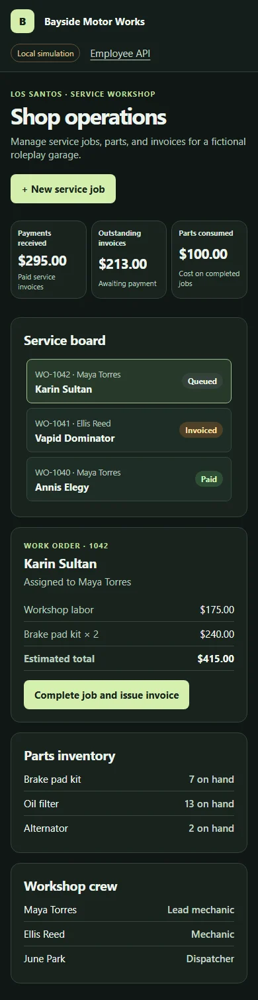

Engineering project · Runtime screenshot
GTA RP Workshop Management
Move a fictional repair job through stock consumption, invoicing and payment.
Local portfolio demo
Public source access pending.
Run the local demo
From the prepared project checkout, run these commands and open the address printed by the server. The repository may require access.
cd gta-rp-business-management-tool/frontend
npm ci
npm run dev -- --host 127.0.0.1

Problem
A roleplay workshop manager needs consistent job, stock and payment totals while completing service work.
Architecture
The React demo stores fictional jobs in browser storage. Web Locks serialize same-origin tab updates, and stock and money summaries derive from saved job states. A separate ASP.NET API manages account-scoped employees.
Engineering decisions
- Represent monetary values in integer cents and derive summaries from job state.
- Serialize workshop mutations across tabs with Web Locks.
Implemented workflow
- Complete the Karin Sultan repair and inspect the brake pad stock deduction.
- Record its full simulated payment and reload to verify persistence.
- Try completing a job that requires more alternators than are in stock.
Checks and evidence
Prepared application screenshots and the source README document this workflow. Application checks were not rerun during this portfolio update.
- Reviewed the source README and prepared screenshots in project-2026 on 25 November 2026.
Scope and next steps
- The browser workflow has no live game integration or payment processor.
- Business membership and service operations are simulated, separate from the employee API.
- The demo requires a current browser with Web Locks support.
Technology
React · TypeScript · Web Locks · ASP.NET Core
Preview availability
Screenshots show the prepared local version. Hosted demos remain pending, and source access may require permission. Local setup requirements and remaining limits are documented above.
← Return to portfolio